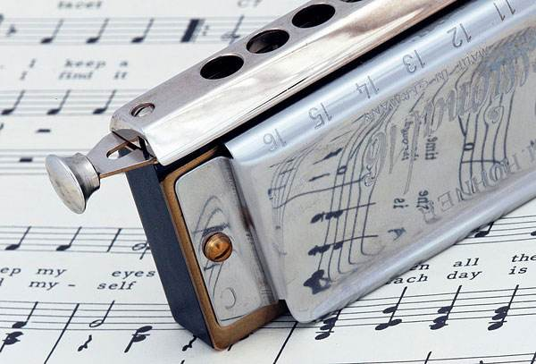
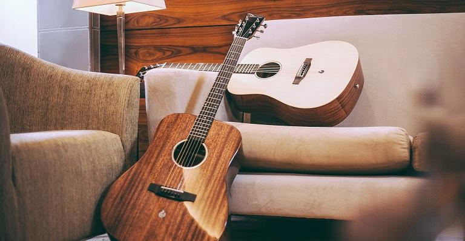
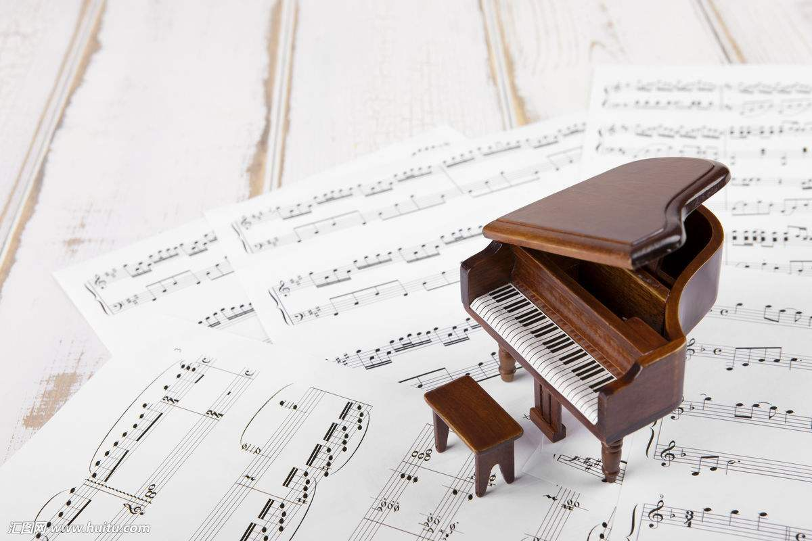
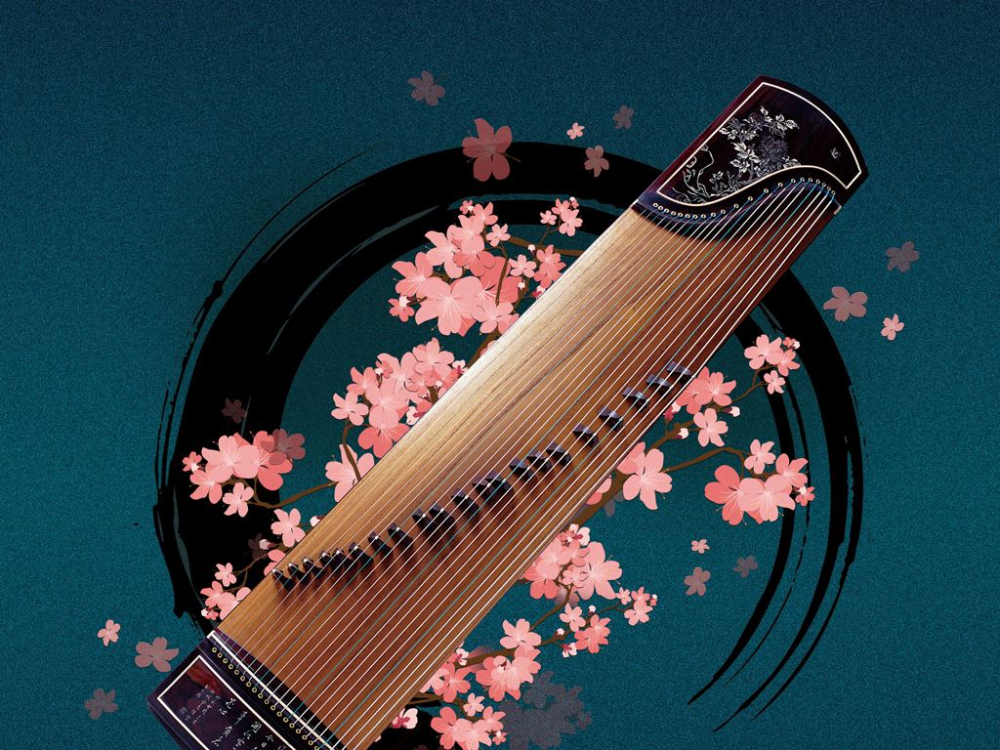

乐器列表(点击查看)
- 
- 口琴，(英文Harmonica），用嘴吹或吸气，使金属簧片振动发声的多簧片乐器；
- 在乐器分类上属于自由簧的吹奏乐器。其发声源是长度介于1.5～3.5cm的簧片
- 而非空气柱（如长笛）。
- 
- 吉他（意大利语：Chitarra），又译为结他或六弦琴。是一种弹拨乐器，通常有六条弦，
- 形状与提琴相似。吉他在流行音乐、摇滚音乐、蓝调、民歌、佛朗明哥中，常被视为主
- 要乐器。而在古典音乐的领域里，吉他常以独奏或二重奏的型式演出；当然，在室内乐
- 和管弦乐中，吉他亦扮演着相当程度的陪衬角色。
- 
- 钢琴（意大利语：pianoforte）是西洋古典音乐中的一种键盘乐器，有“乐器之王”
- 的美称。由88个琴键（52个白键，36个黑键）和金属弦音板组成。意大利人巴托
- 罗密欧·克里斯多佛利（Bartolomeo Christofori，1655-1731 [1] 在1709
- 年发明了钢琴。
- 
- 古筝又名汉筝、秦筝、瑶筝、鸾筝，是中国汉民族传统乐器中的筝乐器，属于弹
- 拨乐器。它是中国独特的、重要的民族乐器之一。它的音色优美，音域宽广、
- 演奏技巧丰富，具有相当强的表现力，因此它深受广大人民群众的喜爱。